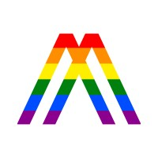
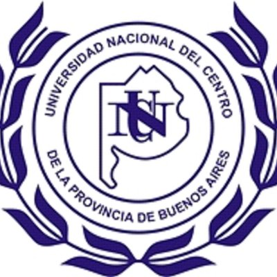

Hi 👋
I'm Matias, a Systems Engineer from Argentina, currently working as an iOS Engineer at Nike. Passionate about iOS development, Accessibility, Usability, User Experience and Inclusive Design, as well as Leadership, Communication, and other soft skills. I will pour thoughts, ideas and different learnings here.
You can find me online visiting my LinkedIn page, or just say hello at matiasglessi@gmail.com.
Career
Senior iOS Engineer
Nike
Part of the iOS team in charge of defining and developing the decision and buy process on the Nike App, the most important app from Nike, the leading brand in sports and sports products. Here, my responsibilities go through supervising code reviews processes and developing new functionalities with deep care in good practices, and being involved in the app creation process, participating in Product features definition and refinement.
iOS Engineer
etermax
- In charge of the iOS team developing Melody, a social media app for recording collaborative videos, and Preguntados / Trivia Crack,, one of the most downloaded trivia games in the world.
- Develop with a focus on SOLID Principles, Clean Code, Clean Architecture, Test Driven Development, and Interaction Driven Design. Also on iOS good practices, emphasizing in Apple’s Human Interface Guidelines and key UX principles.
- Responsible for the team’s roadmap definition working together with the Product Owner, improving user stories, and developing technical requirements. Managing and creating new releases, coordinated with the Product team. Additionally, taking care of training and tutoring other developers of the team, supervising code reviews, and performing technical interviews and new members’ onboarding.
iOS Developer
IntermediaIT
iOS Developer
Storyline
Responsible for building the Storyline iOS app in both Swift and Objective-C, until the startup shutdown in 2017.
Java Developer
Globant
Backend developer of a marketplace for Google’s Project ARA modules (as a Contractor) until its cancellation.
Extra - Consulting
 Tech Content Creator
Alkemy
Content creation for a teaching and first-job finder platform on different topics related to the tech world: iOS, Swift, Git, Scrum and JIRA. Many of these courses are used by large companies in the sector, like Mercado Libre with its Mobile Bootcamp, Accenture, Despegar and others.
iOS Consultant
SocialWeaver
Worked as a Consultant for the iOS app at SocialWeaver. Oriented to the resolution of errors, maintenance, documentation and creation of new features with a focus on the Product roadmap.
Education
 Systems Engineer
Universidad Nacional del Centro
5-year college program similar to a Bachelor's Degree in Computer Science. My final project was an iOS app that teaches Scrum to tech and non-tech people, with gamification techniques.
UX and Inclusive Design
Universidad Nacional del Centro
College Degree in User Experience and Inclusive Design. Also refered as: Diplomatura en Diseño de Experiencias Digitales.